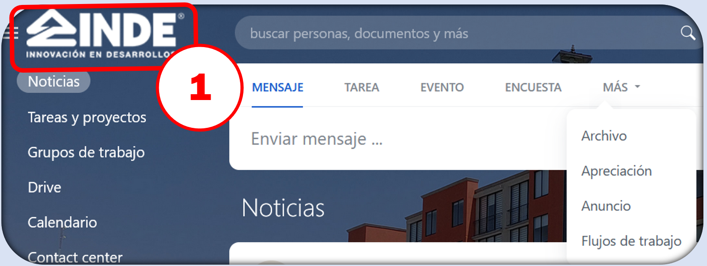
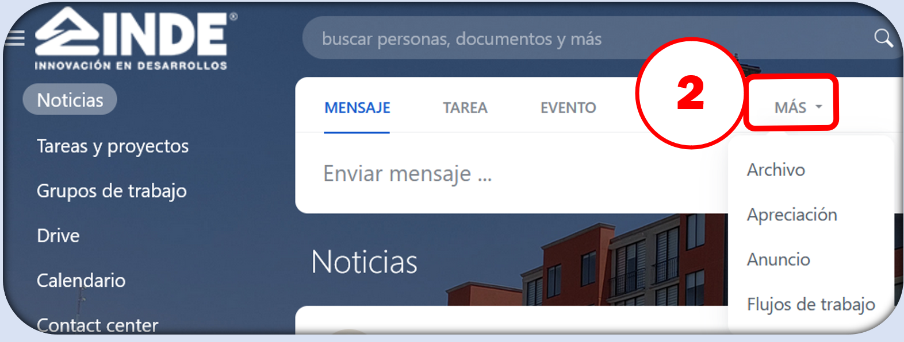
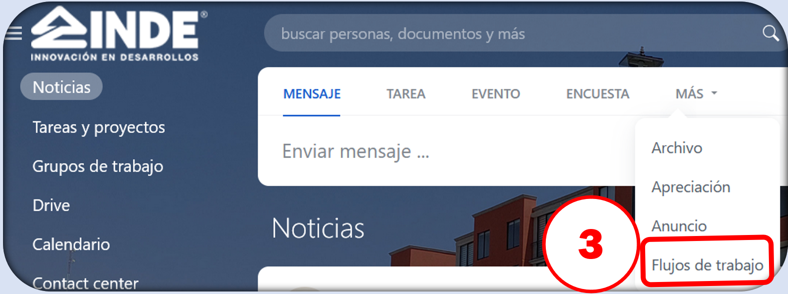
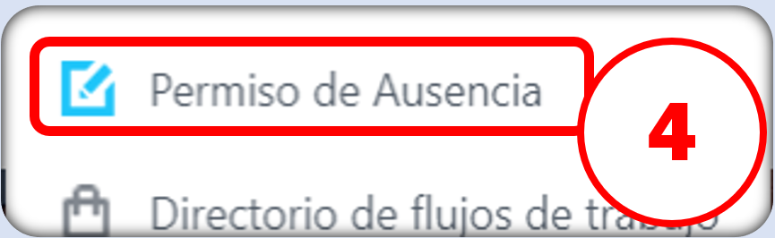
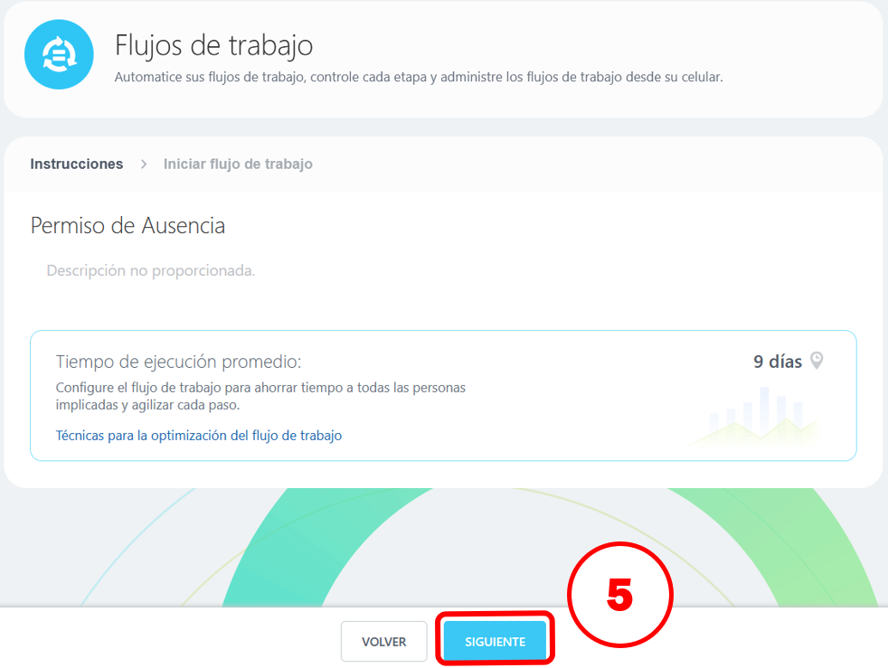
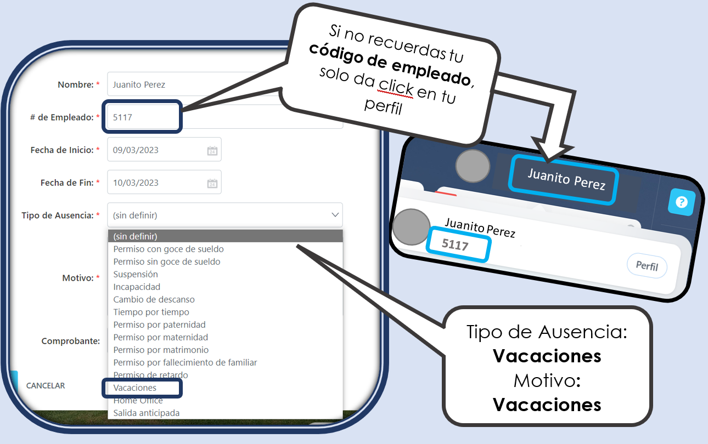

1. Selecciona el Logo de INDE

2. Selecciona la opción MÁS

3. Selecciona Flujos de Trabajo

4. Selecciona Permiso de Ausencia

5. Nos aparecera una ventana con el nombre Flujos de Trabajo, seleccionamos SIGUIENTE

6. Rellenamos la información e INICIAR
